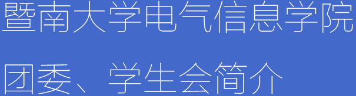

暨南大学电气信息学院团委学生会
Electrcal and Information College of Jinan University Youth League Committee & Student Union
暨南大学电气信息学院团委学生会
Electrcal and Information College of Jinan University Youth League Committee & Student Union


暨南大学电气信息学院团委、学生会（以下简称：我院团委、学生会）是全校学生组织中的一个重要组成部分。 我院团委、学生会自成立以来一直秉承着“忠信笃敬”的校训，以“心系你我，携手共进”为工作宗旨，不忘百年辉煌，对内不断提高自身素质，对外塑立优秀形象，在学校与学生的联系沟通方面发挥着重要作用。 我院团委、学生会致力于维护和践行学院的规章纪律，组织同学们开展各项学生活动，旨在倡导良好学风的形成和促进同学之间的团结，从而协助学院建设良好的学习生活环境。
我院团委、学生会由刘煜琼和于保山两位老师负责和指导，并由主席团进行管理，主席团下设有秘书处、人力资源部、信息编辑部、 组织部、学术部、宣传部、文娱部、体育部、公关部、KSC联盟、心理服务部共11个部门。 各个部门间既相互独立，又相互依存，各司其职的同时，也会不遗余力地协助其他部门的工作，以确保我院团委、学生会各项工作的顺利开展。 本院自成立以来，积极举办了一系列富有学院特色的品牌活动，如“APP嘉年华系列大赛”、“电信慢递”、“头脑风暴系列大赛”及“群雄争霸大赛”等，彰显了我院别具一格的风采。
三年历练，我院团委、学生会已逐步形成了一套完善的管理制度，使各项工作都有章可循、按章办事，力争把我院团委、学生会打造成一支独具魅力的队伍。 在全体人员的共同努力下，我们向着目标一步步迈进，不仅取得了全院师生的信赖，更赢得了学校的认可，荣获了“优秀学生会”的称号。
我院团委、学生会是一个充满创意、洋溢着青春活力的大家庭，无论你是热情开朗还是沉稳内敛，无论你是想锻炼自己还是想广交朋友，在这里都能够找到适合你发展的舞台。 在未来，我院团委、学生会将一如既往地努力下去，不满当下、精益求精，力争取得更好的成绩！